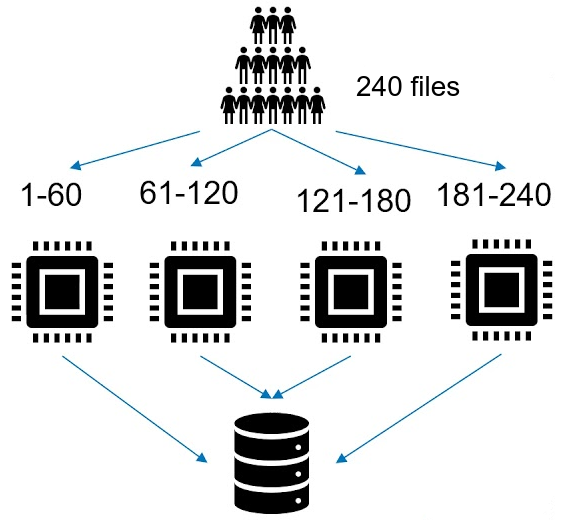

Projects

Java
OOPS
Multithreading
Multi-threaded Aggregator
Implemented a multi-threaded aggregator to group a large number of similar files together.
This improves performance by optimizing resources for end-to-end file processing. This was
one of the most noticeable and prominent feature of our last release.

Angular
JavaScript
Microfrontend
Development: Microfrontends
Created promotion and inventory microfrontends (MFEs) from scratch using JavaScript and
Angular. These MFEs played a crucial role in enhancing product promotion capabilities and
inventory management within the system.
Java
Microservices
System Design
Multi-tenant Architecture
Developed tenant-specific messaging queues that allow users to concurrently process files
via different tenants, thereby speeding up file processing. This feature accelerated client
processing by 33%. Object-oriented programming was utilized in the whole project.
Java
OOPS
Automation
ActiveMQ Monitoring
Built a system to check if the monitoring service can connect to Java messaging queues. If
not, it starts the service. Out-of-memory detection monitors the log files for out-of-memory
errors. Messaging service will be stopped if an error occurs and the user gets notified.
Python
DBMS
OOPS
Mini SQL Engine
Mini SQL Engine was designed to run a subset of SQL queries using the command line
interface. The whole project was coded using object-oriented programming.
Thesis
Data Analysis
Research Project
Post-Stroke Rehabilitation
To expedite post-stroke rehabilitation, I researched EEG signals to find a correlation between
motor movements and the inactive parts of the brain. Complete pre-processing pipeline was
deployed to clean, process, and analyze the complex EEG signals.
Publication
Jain, A., Gurugubelli, K., Vuppala, A., & Vemuri, K. (2022). Decoding self-automated and motivated finger movements using novel single-frequency filtering method – An EEG study.
Biomedical Signal Processing And Control, 72, 103284.